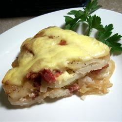

Home
French Tartiflette Recipe

Description
This tartiflette is a delicious French dish. An American would probably call it a potato casserole. Now that I am
in France, I am trying to experiment for my honey's sake!
Ingredients
- 3 large potatoes, peeled and sliced
- 7 strips bacon, chopped
- 1 tablespoon unsalted butter
- 1 large onion, sliced
- 1/4 cup white wine
- 2 tablespoons crème fraîche
- 1 (8 ounce) round Reblochon cheese
- salt and ground black pepper to taste
Steps
- Bring a large pot of salted water to a boil over high heat; add potatoes, then reduce heat to medium-low,
cover, and simmer until tender, about 20 minutes. Drain; steam dry, 1 to 2 minutes.
- Preheat the oven to 425 degrees F (220 degrees C). Grease an 8-inch square baking dish.
- Cook bacon in a skillet over medium-high heat for about 5 minutes. Transfer bacon to a plate; discard
grease. Melt butter in the same skillet; add onions. Cook and stir until translucent, about 5 minutes.
Return bacon to the skillet. Add wine; simmer until nearly evaporated. Remove from heat.
- Place 1/2 potatoes into the prepared dish; spread 1/2 bacon mixture over top. Layer in remaining potatoes,
spread crème fraîche over top, then add remaining 1/2 bacon mixture. Remove and discard rind from Reblochon.
Cut cheese into thin slices; layer evenly over top of casserole.
- Bake in the preheated oven until cheese is melted and slightly browned, about 15 minutes. Season with salt
and black pepper. Serve hot.